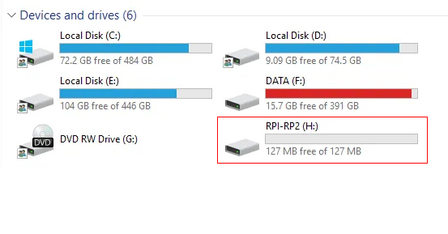
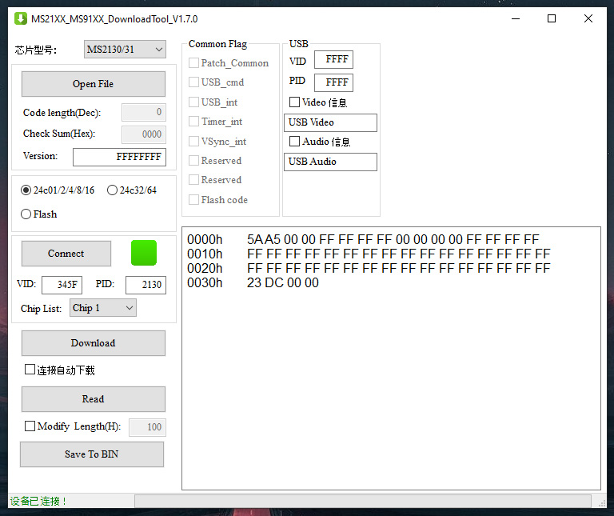
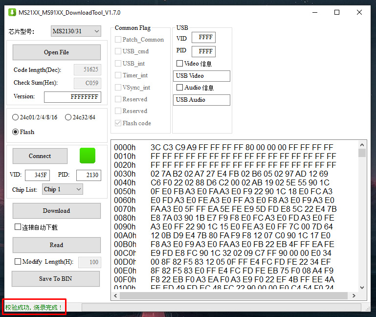

Открываем репозиторий разработчика HyperSPI, нам нужна страница релизных версий
(ссылка).
Скачиваем актуальный драйвер в зависимости от испоьзуемой платы (Rp2040 / ESP32 / Esp8266) и типа светодиодной ленты.
В моем случае я использую плату Rp2040 и ленту WS2812B, соответственно мне необходимо использовать драйвер:
HyperSPI_Pico_ws2812.uf2
Подключаем плату Rp2040 к компьютеру с помощью Type-C кабеля.
Далее необходимо перевести плату Pico в режим DFU, для этого нажмите и удерживайте кнопки "boot" и "reset", затем
отпустите кнопку "reset" затем отпустите кнопку "boot". В системном файловом менеджере вы должны найти новый диск с
наименованием "RPI-RP2"

Перетащите (или скопируйте) скачанную ранее прошивку на этот диск.
Pico автоматически сбросится после загрузки и через несколько секунд он будет готов к использованию с HyperHDR.
Из данного поста автора HyperHDR скачиваем актуальную версию модифицированной прошивки
(ссылка).
В данном сообщении указаны ссылки на загрузку утилиты для прошивки нашего устройства, скачиваем ее
(ссылка).
Открываем скачанную программу, подключаем карту захвата в компьютер.
В окне после подключения устрйства вы должны увидеть зеленый квадрат (ранее был красным до подключения).

Нажимаем на кнопку "Read", далее "Save to BIN".
Сохраняем считанный файл с расширением *bin, на данном этапе мы сохранили резервную копию оригинальной прошивки.
Теперь звгрузим модифицированную прошивку, распакуем из *zip архива файл с расширением *bin.
В окне программы нажимаем кнопку "Open File", указываем путь до нашего файла, нажимаем "Download".
Ждем окончания процесса, в леом нижнем углу по окончании загрузки увидим сообщение об успешной прошивке.

На этом данный этап подготовки устройств к дальнейшей сборке закончен.